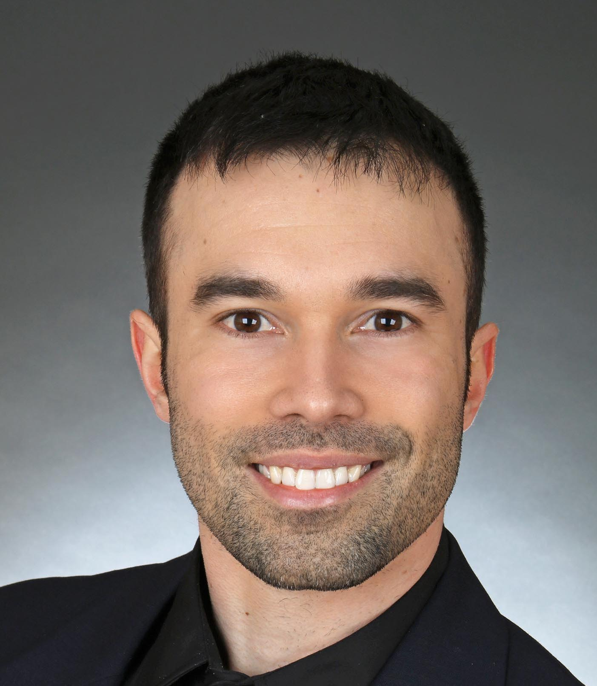

Burns Labs: Teaching & Advisory
Back to Burns Life Sciences Consulting
Table of Contents
Become your own single-cell experts in weeks, not years.
Hands-on training and strategic guidance curated from a world-class network
Why rent insights forever? Burns Labs assembles the right instructor for each module and hands your scientists the skills to operate state-of-the-art pipelines themselves. Our senior advisors remain on-call for the thorny edge cases.
Outcome snapshot
From: Skill gaps & vendor dependence To: Self-sufficient team in < 4 weeks
From: Fragmented knowledge To: Cohesive curriculum + well-commented code
From: Ad-hoc questions and answers To: On-demand advisory channel
Burns Labs learning path: Modern best practices grounded in timeless first principles. We teach the same disciplined thinking that powers our consulting work.
Concept inoculation: core theory delivered in plain language
Live code labs: build & break R/Python notebooks alongside our instructors
Project sprint: apply learnings to your dataset under mentor guidance
Office-hours safety net: 30 days of async Q&A after the course
Signature seminar: Single-Cell from First Principles (3 days)
Format: on-site or virtual
Modules: Data QC, Dimensionality reduction, Clustering, Annotation, Visualization
Faculty: rotating domain specialists selected to match your tech stack
Take-home: slide deck, cleaned notebooks, cheat-sheets
Tailored mentorship
Road-mapping session → custom weekly plan
1:1 or small-group calls (60 min) with a dedicated mentor
Progress checkpoints every 4 weeks
Advisory retainer
Need a senior sounding board? Keep our leadership team on Slack for rapid reviews of figures, grant aims, or pipeline hiccups.
Slack/Teams channel with 24 hour response times
Quarterly deep-dive meeting
Early-access to our internal toolkits
Engagement blueprint
Discovery call
Needs audit → choose seminar / mentorship / retainer
Instructor roster confirmed & schedule locked
Live sessions + resource hand-off
Program leadership & faculty network
Tyler Burns, PhD: Program Director

Tyler designs the curriculum, vets instructors, and orchestrates each engagement end-to-end. You gain a single point of contact plus a bench of experts.
Faculty Network
Our rotating roster includes:
Bioinformatics engineers (R/Python package authors)
Spatial proteomics pioneers (CODEX, Visium, Xenium)
Statistical geneticists (GWAS, pathway analysis)
AI toolsmiths (deep learning, LLMs)
Each instructor teaches the piece they live and breathe daily.
Ready to upskill? Book a free 30min consultation